在川农屿见你
农屿APP 川农智慧助手
立即下载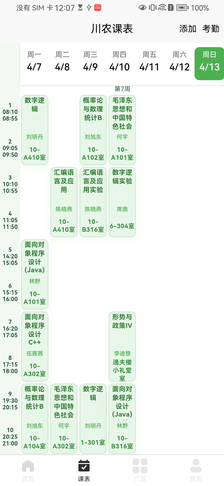
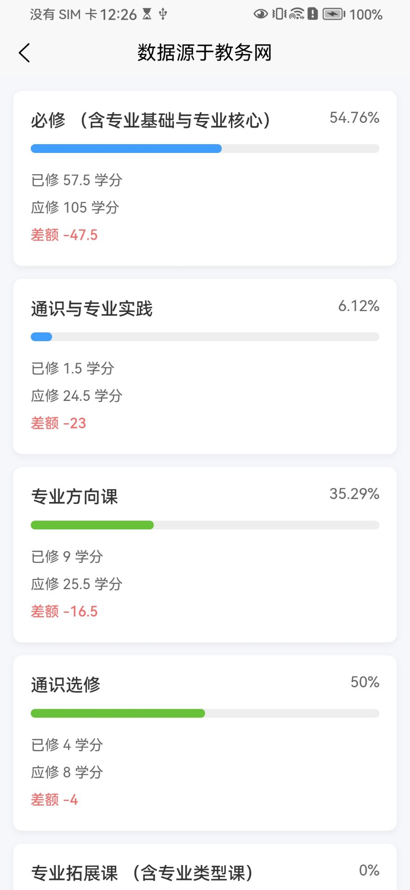
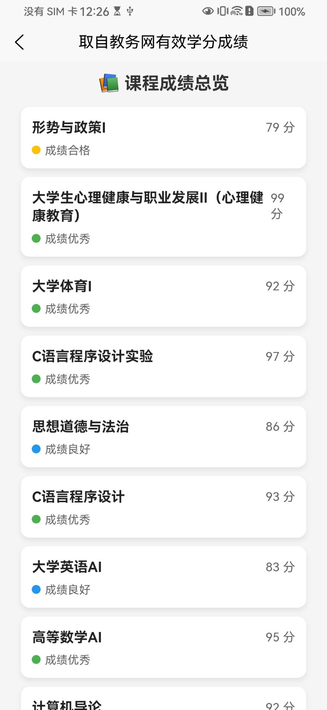
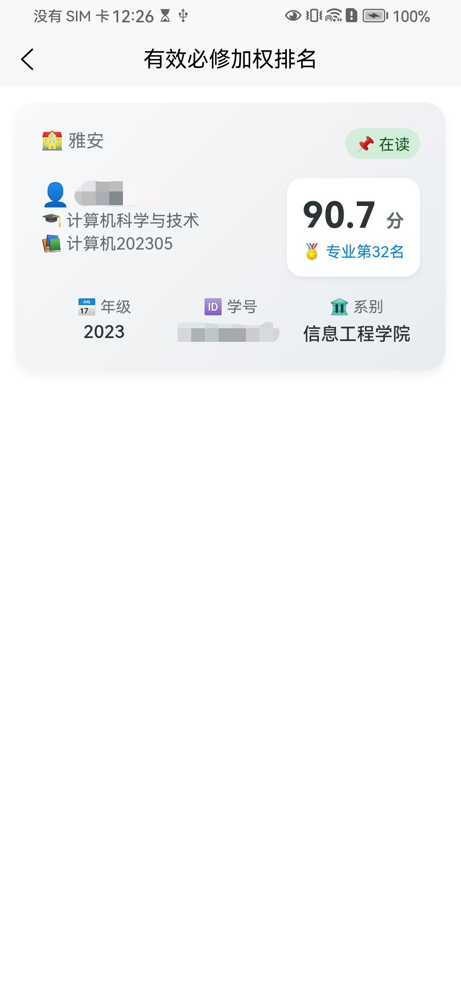
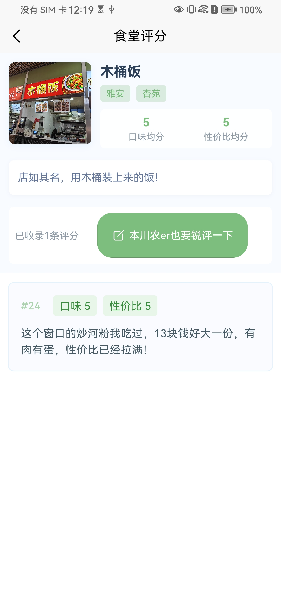
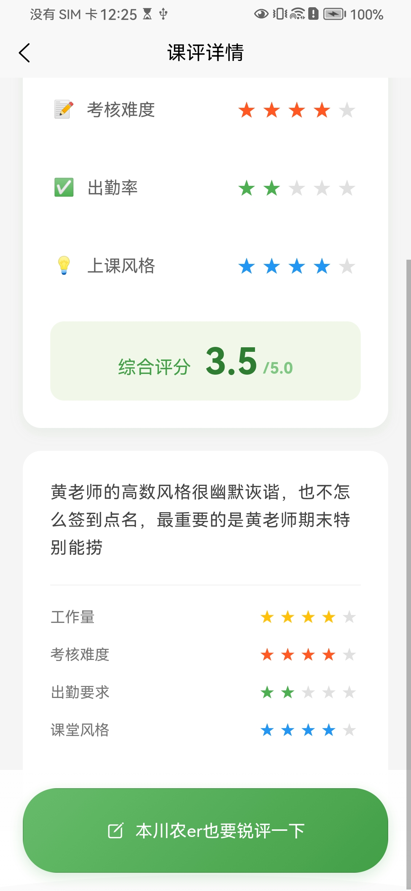
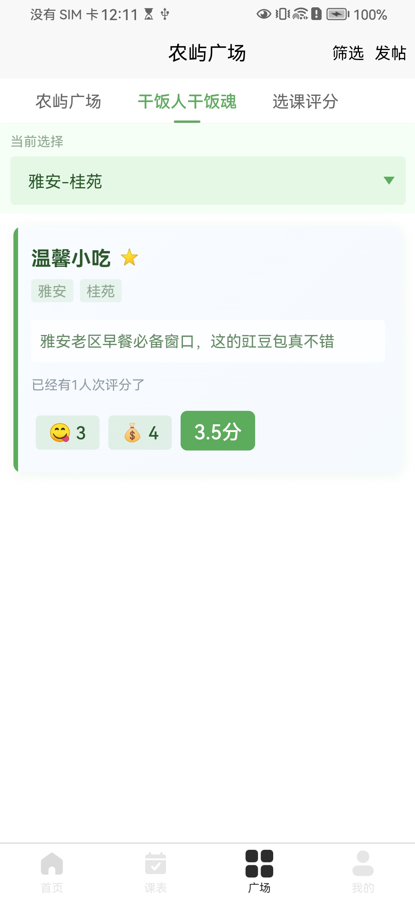
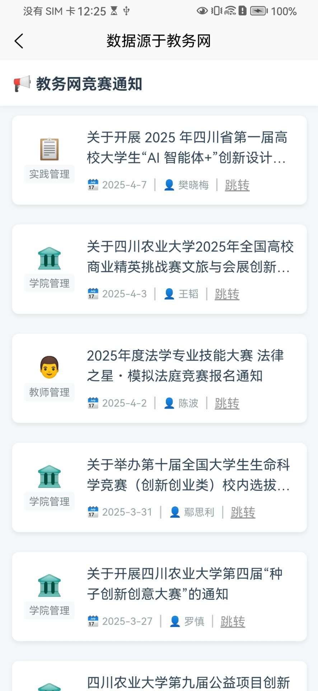
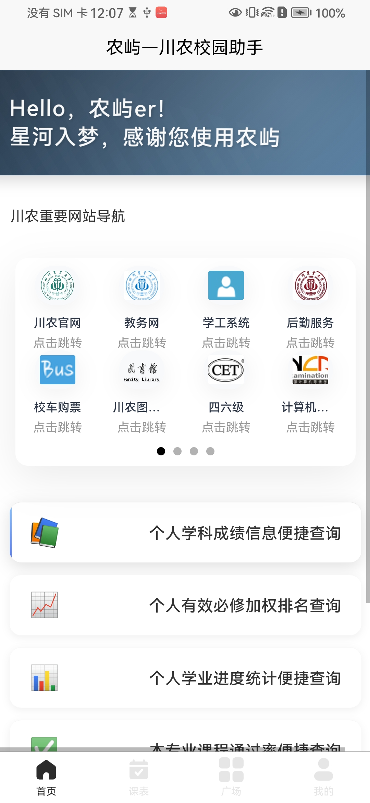
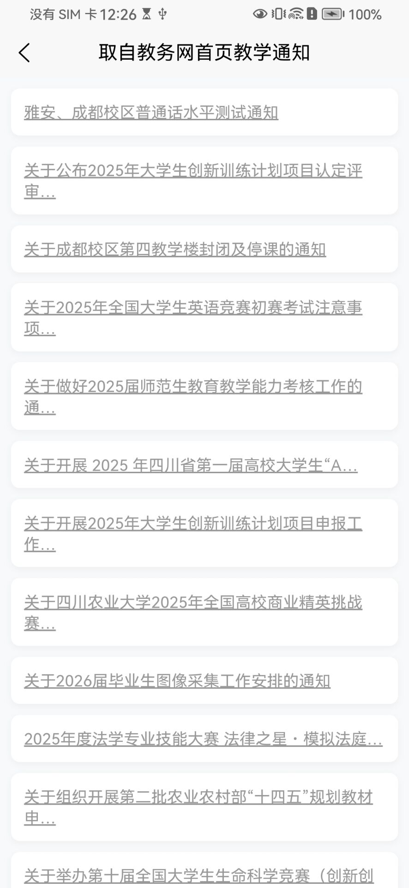
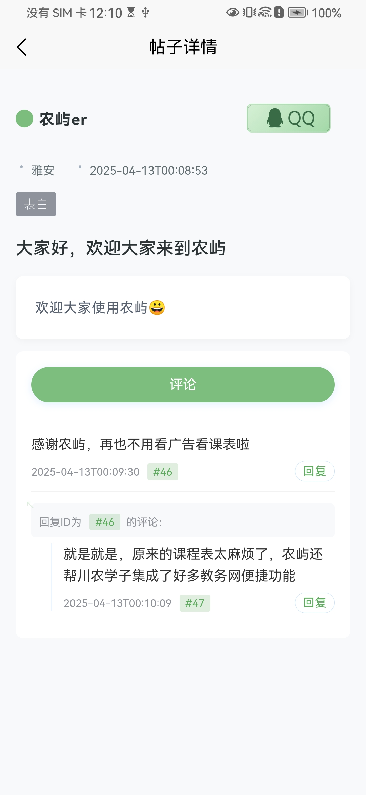
川农校园助手
使用四川农业大学教务账号登录，同步教务数据。
我们承诺不保存用户教务密码等敏感信息，若用户仍不放心大可登录农屿后及时修改教务网密码， 但存储在用户手机本地的密码随即失效，不再能够在首页查询教务相关信息，不要着急，请您退出登录重新登录即可！
唯一设备登录，更换设备时需在上台设备中退出登录
若用户直接卸载农屿而未先退出登录，下次使用农屿时账号状态仍未已登录，此时可联系开发者解决。 点击本网页中的气泡按钮即可一键复制农屿用户交流群群号，欢迎大家进来讨论，一切问题都能向开发者反馈！
请大家不要在公共言论区域发表任何带有侮辱他人、伤害他人的言论；请大家客观发表争对食堂饭店以及老师课程的评价；
若刚刚登录后发现课表无法显示，您可重新进入农屿，若还是无法解决，您可联系开发者告知bug，当然您还可以删除农屿，再大骂一声哪个sb做的软件
微信开放平台应用信息
应用名称：农屿川农校园助手
应用类型：校园服务类移动应用
目标用户：四川农业大学在校学生
用户规模：面向川农约3万余名师生
开发框架： uni-app
数据存储：本地SQLite数据库 + 云端数据同步